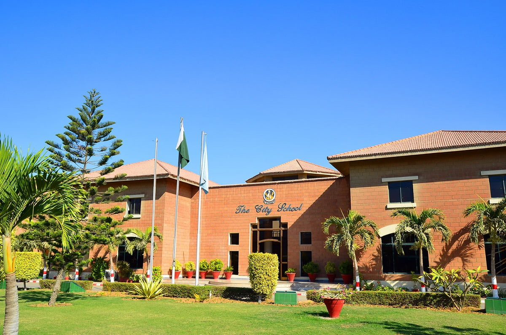

The City School


Established in Karachi in 1978, The City School is today one of the largest private school networks in Pakistan with branches in all the major cities across the country. It currently has 172 schools in 48 cities with over 150,000 students in 500+ owned and franchised schools. The City School continues to expand its reach to meet the demands for quality education. The knowledge and skills-based curriculum derived from the UK national curriculum guides students from Nursery to Cambridge International Examinations (for the 16 and 18 year age group), qualifying them for the IGCSE, and O and A Level examinations. The uniform implementation of the curriculum gives parents, students, and teachers the advantage of a smooth and efficient transfer from one school to another within the system
The City School secure positions in top universities worldwide. Our students, according to Cambridge Assessment International Examinations annual results analysis, are amongst the highest achievers in their city, their country and, in some cases, in the world. The curriculum encourages a student-centered approach where learners have an active role in their learning process and develop the skills and ability to make a significant contribution to society.

All academic matters at The City School are the responsibility of the Academic Department which comprises three sections:
The City School is clear in its strategic intent to provide a high-quality educational experience that will motivate, enthuse, and encourage its large student community worldwide. With a readiness to move rapidly to develop new ways of teaching for effective learning, our schools exude a confidence that comes from a remarkable track record of having academic systems and procedures in place which suit our students’ needs and help sustain a high level of examination success. In establishing a clear future vision of what academic excellence might look like in our schools, there is a constant need to shape our academic planning to align with, and equip our students with, the skills and values to cope with growing demands of the 21st century.